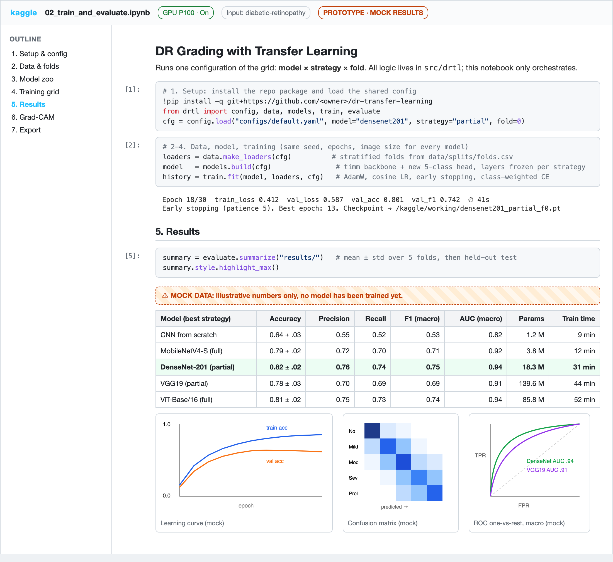
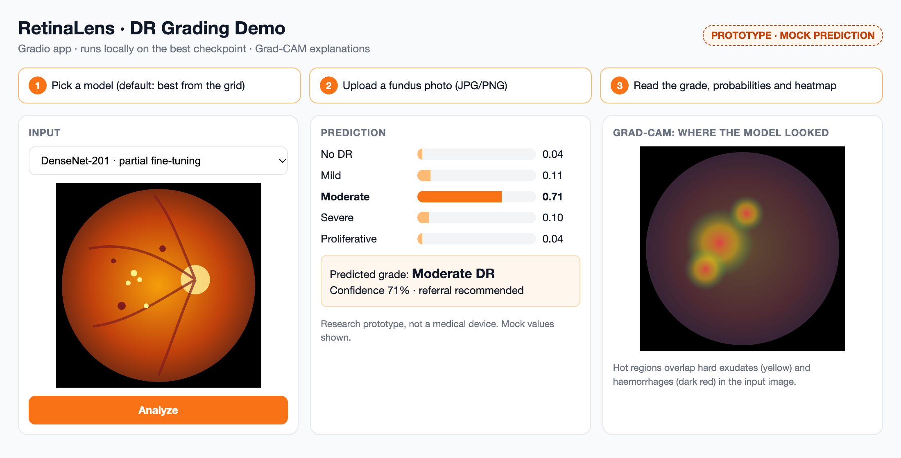

Université Cadi Ayyad · Faculté des Sciences Semlalia, Marrakech Département d'Informatique · Master ISI, S3 · Module Deep Learning (Transfer Learning) Encadrant : Pr. Mustapha AATILA
Rapport de cadrage · Projet 6
Multi-Class Diabetic Retinopathy Classification from Color Fundus Photography Using Deep Transfer Learning
Comparaison de l'extraction de caractéristiques, du fine-tuning partiel et du fine-tuning complet sur MobileNetV4, DenseNet-201, VGG19, ViT-Base/16 et un CNN entraîné de zéro, avec interprétation Grad-CAM.
Équipe
ALAA EDDINE MOUATEChef de projet · propriétaire du dépôt GitHub
AbdelatiDonnées · prétraitement · augmentation
IkramÉvaluation · métriques · analyse comparative
YoussefInterprétabilité Grad-CAM · démo
Année universitaire 2025-2026Dépôt : dr-transfer-learningVersion 1.0 · 11 novembre 2026
Sommaire
1. Objet du document et conventions2
2. Analyse du sujet : exigences extraites du PDF3
3. Idée et solution proposée4
4. Données, prétraitement et augmentation5
5. Modèles, stratégies et protocole d'entraînement6
6. Métriques d'évaluation et interprétabilité7
7. Structure du dépôt et outillage9
8. Feuille de route : les 11 étapes, de l'installation à la démo finale10
9. Répartition du travail13
10. Prototypes (format hybride)14
11. Hypothèses, risques et points à valider15
12. Références de départ16
1. Objet du document et conventions
Ce rapport fixe le cadre du Projet 6 avant toute implémentation : ce qui est exigé par l'énoncé, ce que l'équipe propose pour y répondre, l'ordre des étapes, la manière de vérifier chaque étape et la répartition des tâches. Il sert de référence commune aux quatre membres et sera mis à jour si une décision change.
Conventions de lecture
EXIGÉ p.X exigence tirée de l'énoncé (numéro de page du PDF du sujet).
PROPOSITION choix de l'équipe, modifiable.
HYPOTHÈSE information non encore vérifiée.
DONNÉES FICTIVES valeurs d'illustration, aucun modèle n'est encore entraîné.
Décisions déjà validées par l'équipe (11/11/2026)
Décision
Choix retenu
Raison principale
Format du livrable
Hybride : package Python src/drtl + notebooks Kaggle pour la grille d'expériences, et petite démo Gradio en fin de projet
Couvre toutes les exigences ; la démo valorise la soutenance et reste optionnelle
Le dataset s'attache directement, 4 comptes = 4 entraînements en parallèle
Framework
PyTorch + timm
Les 4 architectures imposées (dont MobileNetV4 et ViT-B/16) sont disponibles dans une seule bibliothèque
2. Analyse du sujet : exigences extraites du PDF
Le sujet demande de classer la rétinopathie diabétique (DR) à partir de rétinographies couleur à l'aide de modèles pré-entraînés, en comparant trois stratégies de transfert : extraction de caractéristiques, fine-tuning partiel et fine-tuning complet EXIGÉ p.1. L'objectif général est de concevoir, entraîner, comparer et évaluer des classifieurs d'images dans un domaine réel EXIGÉ p.5.
Exigence
Détail
Page
Dataset réel de DR
Exemple fourni : Kaggle jockeroika/diabetic-retinopathy
p.1
Modèles comparés
MobileNetV4, DenseNet-201, VGG19, ViT-Base/16 + un CNN « from scratch »
p.3
Trois stratégies de transfert
Feature extraction, fine-tuning partiel, fine-tuning complet
p.1
Prétraitement et augmentation
Redimensionnement, normalisation, procédure d'augmentation, justifiés par des références
p.2
Découpage et validation croisée
Répartition apprentissage / validation / test ; validation croisée
p.2, p.3
Paramètres d'entraînement
Optimiseur, learning rate, batch size, nombre d'époques, mêmes conditions pour tous les modèles
p.3
Métriques
Accuracy, Precision, Recall, F1, ROC, AUC, matrices de confusion, nombre de paramètres, temps d'entraînement
p.3
Courbes d'apprentissage
Accuracy et loss, entraînement / validation
p.3
Analyse comparative
Modèle le plus précis, le plus léger, le plus robuste
p.3
Interprétabilité
Grad-CAM : zones malades, signes détectés
p.2, p.3
Papier en anglais
Structure imposée : Abstract, mots-clés, lien GitHub, Introduction, État de l'art (tableau des travaux récents), Méthodologie, Résultats, Interprétabilité, Discussion, Conclusion, Contributions, Références
p.1 à p.4
Dépôt Git
Code organisé et commenté, README.md (dépendances, exécution), historique de commits réguliers
p.4
Tableau des contributions
Contribution de chaque membre, à la fin du papier
p.4
Originalité
Travail original ; propositions innovantes encouragées
p.4, p.5
Échéances
Évaluation lors de la dernière séance de DL ; dépôt final (code + papier) au plus tard le jour de l'examen ; aucun ajout après
p.5
Ce que le sujet ne précise pas
Aucun barème de notation n'est fourni. Nous supposons que le papier, la grille d'expériences comparable et la qualité du dépôt pèsent le plus. HYPOTHÈSE
Les dates exactes (dernière séance, examen) ne figurent pas dans le PDF : la feuille de route est exprimée en semaines relatives. HYPOTHÈSE
La taille de MobileNetV4 n'est pas imposée ; nous proposons la variante « conv small » (la plus légère). PROPOSITION
3. Idée et solution proposée
3.1 Le problème
La rétinopathie diabétique est l'une des premières causes de cécité évitable chez l'adulte en âge de travailler [1, 2]. La rétinographie couleur du fond d'œil est l'examen de dépistage standard : non invasif et peu coûteux [3]. Le nombre de patients diabétiques augmente beaucoup plus vite que le nombre d'ophtalmologues, et les lésions précoces (microanévrismes, petites hémorragies, exsudats) sont minuscules à l'échelle de l'image [3, 4]. Le Deep Learning a déjà montré des performances proches des experts [4], mais les jeux de données annotés restent limités, d'où l'intérêt du transfert d'apprentissage [5].
3.2 La question de recherche
Pour un petit jeu de données de DR à 5 grades, quelle combinaison architecture × stratégie de transfert donne le meilleur compromis entre précision, légèreté et robustesse, et le modèle regarde-t-il les bonnes lésions ?
3.3 La solution en une phrase
Un pipeline PyTorch unique et paramétré (src/drtl) entraîne les 5 modèles sous les 3 stratégies avec exactement les mêmes données, folds, graine, taille d'image et budget d'époques ; un notebook Kaggle lance chaque configuration ; les résultats sont agrégés automatiquement dans les tableaux et figures du papier ; une démo Gradio présente le meilleur modèle avec sa carte Grad-CAM.
3.4 Pourquoi ce format hybride
A. Notebook seul
B. Application seule
C. Hybride (retenu)
Couverture des exigences
Complète
Faible : la grille et le papier sont l'essentiel
Complète + créativité (p.5)
Effort
Faible
Élevé, peu valorisé
Faible à moyen ; démo ≈ 80 lignes
Travail à 4 sur Git
Conflits fréquents dans les .ipynb
Correct
Bon : la logique est dans des .py, les notebooks restent fins
Soutenance
Défilement de notebooks
Visuelle mais vide
Démo en direct + tableaux de résultats
Risque
Faible
Élevé
Faible : la démo est la dernière étape et peut être abandonnée
3.5 Workflow proposé
Figure 1. Workflow de bout en bout. PROPOSITION
3.6 Ce qui distingue notre projet
Comparaison équitable et automatisée : une seule commande par configuration, un seul fichier de configuration, résultats en CSV versionnés. PROPOSITION
Robustesse mesurée, pas seulement affirmée : écart-type entre folds et tests sur images légèrement dégradées (flou, luminosité, compression JPEG). PROPOSITION
Métrique clinique en plus : kappa quadratique pondéré (QWK), standard pour les grades ordinaux de DR. PROPOSITION
Démo interactive avec carte Grad-CAM pour la soutenance. PROPOSITION
4. Données, prétraitement et augmentation
4.1 Jeu de données proposé
Nous partons du jeu suggéré par l'énoncé : Kaggle jockeroika/diabetic-retinopathyEXIGÉ p.1 (exemple). Sur Kaggle Notebooks, il s'attache comme « Input » sans téléchargement ni clé API.
Caractéristique
Valeur
Statut
Classes
5 grades, organisés en dossiers (l'URL de l'énoncé référence le dossier Mild DR) : No DR / Healthy, Mild, Moderate, Severe, Proliferative DR (échelle ICDR [6])
HYPOTHÈSE à confirmer à l'étape 2
Nombre d'images, images par classe
Non vérifié (l'API Kaggle exige une authentification). Mesuré et figé dans data/splits/ à l'étape 2
HYPOTHÈSE
Déséquilibre
Attendu : la classe saine domine, Severe et Proliferative sont rares
HYPOTHÈSE
Doublons, images illisibles
Contrôle par hachage perceptuel et ouverture de chaque fichier
PROPOSITION
4.2 Découpage PROPOSITION
Test figé : 15 % stratifié par classe, jamais utilisé pour choisir un modèle.
85 % restants : validation croisée stratifiée à 5 folds (graine 42). Chaque fold sert une fois de validation.
Le découpage est calculé une seule fois et versionné (data/splits/folds.csv) : tous les modèles voient exactement les mêmes images EXIGÉ p.3 « mêmes conditions ».
4.3 Prétraitement
Le prétraitement réduit les variations sans rapport avec la maladie (bords noirs, éclairage, taille) et adapte les images au format attendu par les réseaux pré-entraînés [7].
Recadrage du disque rétinien : suppression des bordures noires par seuillage. PROPOSITION
Redimensionnement à 224 × 224 (taille native de ViT-B/16, VGG19 et DenseNet-201). EXIGÉ p.2 (redimensionnement)
Normalisation : moyenne et écart-type ImageNet par canal, cohérents avec les poids pré-entraînés. EXIGÉ p.2 (normalisation)
Option à tester : amélioration de contraste de type Ben Graham (soustraction d'un flou gaussien) [7], comparée en ablation sur un seul modèle. PROPOSITION
4.4 Augmentation de données
L'augmentation réduit le sur-apprentissage sur un petit jeu en présentant des variantes plausibles des mêmes images [8]. Appliquée uniquement à l'entraînement, à la volée :
Transformation
Paramètres proposés
Justification
Retournements horizontal / vertical
p = 0,5
L'orientation du fond d'œil n'est pas pertinente pour le grade
Rotation
± 20°
Variations de positionnement à l'acquisition
Zoom / recadrage aléatoire
échelle 0,9 à 1,0
Variations de champ
Luminosité, contraste
± 15 %
Variations entre caméras et patients
Exclu volontairement : déformations fortes, changements de teinte importants (ils peuvent effacer ou imiter des lésions). PROPOSITION
5. Modèles, stratégies et protocole d'entraînement
5.1 Modèles EXIGÉ p.3
Modèle
Identifiant timm proposé
Paramètres (ordre de grandeur)
Pourquoi dans la comparaison
CNN from scratch
module maison (4 blocs conv-BN-ReLU-pool + tête)
≈ 1 M
Référence sans transfert : mesure l'apport du pré-entraînement
MobileNetV4 [9]
mobilenetv4_conv_small
≈ 3,8 M
Très léger, cible mobile
DenseNet-201 [10]
densenet201
≈ 20 M
Connexions denses, très utilisé en imagerie médicale
VGG19 [11]
vgg19_bn
≈ 144 M
Architecture classique et lourde, point de comparaison historique
ViT-Base/16 [12]
vit_base_patch16_224
≈ 86 M
Transformer : comparaison CNN vs attention
Les nombres exacts de paramètres seront mesurés par le code (tête à 5 classes incluse) et reportés dans le tableau du papier.
5.2 Les trois stratégies de transfert EXIGÉ p.1
Stratégie
Couches entraînées
Learning rate proposé
Feature extraction
Backbone gelé, seule la nouvelle tête de classification (5 sorties) est entraînée
1e-3
Fine-tuning partiel
Tête + dernier tiers environ du backbone (derniers blocs / stages) dégelés
1e-4 (backbone), 1e-3 (tête)
Fine-tuning complet
Tout le réseau
3e-5 (backbone), 1e-3 (tête)
Le CNN from scratch n'a qu'une stratégie (tout entraîner, lr 1e-3). La grille compte donc 4 × 3 + 1 = 13 configurations, chacune sur 5 folds, soit 65 entraînements. PROPOSITION
32 (réduit à 16 avec accumulation de gradient si la mémoire GPU est insuffisante pour VGG19 / ViT)
Nombre d'époques
30 maximum, early stopping sur la loss de validation (patience 5)
Fonction de perte
Entropie croisée pondérée par l'inverse de la fréquence des classes (déséquilibre)
Précision numérique
Mixed precision (AMP) sur GPU
Graine, image, folds
42 ; 224 × 224 ; mêmes 5 folds pour tous
Validation croisée
Stratifiée, k = 5 ; repli possible à k = 3 si le quota GPU ne suffit pas
5.4 Budget de calcul estimé HYPOTHÈSE
Avec quelques milliers d'images en 224 × 224, une époque prend de quelques secondes (feature extraction, MobileNetV4) à environ une minute (fine-tuning complet de ViT-B/16 ou VGG19) sur un GPU P100. Estimation : 20 à 30 heures GPU pour la grille complète, réparties sur les 4 comptes Kaggle (quota gratuit hebdomadaire par compte). Le budget réel sera mesuré à l'étape 5 sur une configuration et la grille ajustée si besoin.
6. Métriques d'évaluation et interprétabilité
6.1 Métriques EXIGÉ p.3
Avec TP, TN, FP, FN calculés par classe (un contre tous) puis moyennés (macro, chaque classe compte autant, adapté au déséquilibre) [13] :
Métrique
Formule
Lecture
Accuracy
(TP + TN) / (TP + TN + FP + FN)
Part d'images bien classées ; trompeuse si les classes sont déséquilibrées
Precision
TP / (TP + FP)
Quand le modèle annonce un grade, a-t-il raison ?
Recall (sensibilité)
TP / (TP + FN)
Combien de cas réels sont retrouvés ? Critique pour le dépistage
F1-score
2 · P · R / (P + R)
Compromis précision / rappel ; métrique principale de sélectionPROPOSITION
Courbe ROC, AUC
TPR = TP/(TP+FN) vs FPR = FP/(FP+TN)
Un contre tous par classe + moyenne macro ; AUC = aire sous la courbe
Matrice de confusion
Comptes réels × prédits
Montre quels grades voisins sont confondus
QWK PROPOSITION
1 − Σ wᵢⱼOᵢⱼ / Σ wᵢⱼEᵢⱼ, wᵢⱼ = (i−j)²/(K−1)²
Pénalise davantage les erreurs de plusieurs grades
Coût
Nb de paramètres, temps d'entraînement, temps d'inférence / image
Répond à « le plus léger » EXIGÉ p.3
6.2 Répondre aux trois questions de l'analyse comparative EXIGÉ p.3
Question
Critère opérationnel proposé
Le plus précis ?
F1 macro moyen sur les 5 folds, puis confirmé sur le test figé ; AUC et QWK en appui
Le plus léger ?
Nombre de paramètres, taille du fichier de poids, temps d'inférence CPU par image
Le plus robuste ?
Plus faible écart-type entre folds + plus faible chute de F1 sur images dégradées (flou, luminosité, JPEG)
6.3 Interprétabilité EXIGÉ p.2, p.3
Grad-CAM [14] sur la dernière couche convolutive de chaque CNN ; pour ViT-B/16, Grad-CAM adapté aux tokens (reshape 14 × 14) ou attention rollout.
Figure type : pour chaque grade, une image correctement classée et une erreur, avec la carte superposée ; commentaire des zones chaudes (exsudats, hémorragies, néovaisseaux) pour répondre à « zones malades » et « signes détectés ».
Branches : main protégée ; une branche par tâche (feat/data-folds, feat/gradcam…), fusion par Pull Request relue par un autre membre.
Commits réguliers et lisibles (feat:, fix:, docs:, exp:) : l'historique est un livrable EXIGÉ p.4.
Notebooks fins : pas de logique métier dans les .ipynb, sorties effacées avant commit (sauf notebooks de résultats finaux).
Jamais de données ni de poids dans Git : images sur Kaggle ; poids dans les « Output » Kaggle ou un Kaggle Dataset privé de l'équipe.
Résultats traçables : chaque entraînement écrit une ligne dans results/runs.csv (modèle, stratégie, fold, métriques, durée, commit Git).
Outillage
Usage
Outil
Entraînement
Kaggle Notebooks (GPU)
Développement local
Python ≥ 3.9, venv, PyTorch (MPS sur Mac Apple Silicon, sinon CPU)
Modèles
timm, torchvision
Métriques, figures
scikit-learn, matplotlib, pandas
Interprétabilité
pytorch-grad-cam
Démo
gradio
Papier
LaTeX (Overleaf), en anglais EXIGÉ p.4
8. Feuille de route : les 11 étapes
Durées en semaines relatives (S1 = semaine de démarrage), les dates officielles n'étant pas dans l'énoncé HYPOTHÈSE. Les étapes 3 à 4 et 8 à 10 peuvent avancer en parallèle. Chaque étape se termine par une Pull Request fusionnée dans main.
1Initialisation du dépôt et de l'environnementS1 · ALAA EDDINE
Objectif
Un dépôt GitHub propre que chaque membre peut cloner et exécuter en moins de 10 minutes.
Tâches
Initialiser Git dans le dossier du projet ; créer l'arborescence (section 7) ; README.md (équipe, installation, exécution) ; .gitignore ; requirements.txt ; package src/drtl minimal (config, graine, détection du device, construction des modèles) ; configs/default.yaml ; notebook 00_setup_check.ipynb ; test tests/test_smoke.py ; premier commit et push ; invitation des 3 collaborateurs.
Livrable
Commit chore: initialize deep learning project sur main, avec ce rapport et les prototypes.
Vérification
pytest -q passe ; le notebook de vérification s'exécute de bout en bout (jupyter nbconvert --execute) et construit les 5 architectures sur un batch factice ; chaque membre refait l'installation sur sa machine et sur Kaggle.
2Acquisition et exploration des données (EDA)S1-S2 · Abdelati
Objectif
Connaître exactement le dataset et figer le découpage.
Tâches
Attacher le dataset sur Kaggle ; compter les images par classe ; vérifier formats, tailles, fichiers corrompus et doublons ; galerie d'exemples par grade ; générer data/splits/folds.csv (test 15 % + 5 folds stratifiés, graine 42).
Livrable
notebooks/01_eda.ipynb, folds.csv, figure de distribution des classes, tableau « Dataset » du papier.
Vérification
Aucune image commune entre test et folds ; proportions de classes identiques (± 1 %) dans chaque fold ; les hypothèses de la section 4.1 sont confirmées ou corrigées dans ce rapport.
3Prétraitement et augmentationS2 · Abdelati
Objectif
Un pipeline d'images unique, identique pour tous les modèles.
Tâches
Recadrage du disque, redimensionnement 224, normalisation ImageNet, augmentations (section 4.4) dans transforms.py ; Dataset et DataLoader dans data.py.
Tests unitaires : forme de sortie 3×224×224, moyenne ≈ 0 et écart-type ≈ 1 après normalisation, aucune augmentation en validation/test ; contrôle visuel de 20 images.
4Modèles et stratégies de gelS2 · ALAA EDDINE + chaque responsable de modèle
Objectif
Construire n'importe quelle configuration par son nom.
Tâches
models.build(cfg) : backbone timm pré-entraîné + tête à 5 classes ; fonctions de gel pour les 3 stratégies ; CNN from scratch ; comptage des paramètres entraînables.
Livrable
models.py + tableau des paramètres (total / entraînables) par configuration.
Vérification
Test : pour chaque configuration, le nombre de paramètres entraînables suit l'ordre feature extraction < partiel < complet ; un pas d'optimisation ne modifie pas les poids gelés.
5Boucle d'entraînement et première configuration de bout en boutS3 · ALAA EDDINE
Objectif
Prouver tout le pipeline sur une configuration avant de lancer la grille.
Tâches
train.py (AdamW, cosine, AMP, early stopping, perte pondérée, sauvegarde du meilleur checkpoint, journal runs.csv) ; notebook 02_train_and_evaluate.ipynb paramétré ; lancer MobileNetV4 / feature extraction / fold 0 sur Kaggle ; mesurer la durée par époque.
Livrable
Premier résultat réel + estimation chiffrée du budget GPU de la grille.
Vérification
Test de sur-apprentissage volontaire : sur 32 images, la loss tend vers 0 ; la courbe de validation est cohérente ; relancer avec la même graine donne les mêmes métriques (± faible bruit GPU).
6Grille d'expériences sur KaggleS3-S5 · les 4 membres (1 modèle chacun)
Objectif
Entraîner les 13 configurations × 5 folds dans les mêmes conditions.
Tâches
Chaque membre lance son modèle sur son compte Kaggle (voir section 9) ; récupère runs.csv, courbes et checkpoints ; commit des résultats (pas des poids).
Livrable
results/runs.csv complet (65 lignes), courbes d'apprentissage par configuration.
Vérification
Script de contrôle : 65 lignes, aucune configuration manquante, même hash de default.yaml et de folds.csv sur toutes les lignes.
7Évaluation et analyse comparativeS5 · Ikram
Objectif
Produire tous les tableaux et figures de résultats du papier.
Tâches
evaluate.py : moyennes ± écart-type, matrices de confusion, ROC/AUC un contre tous, QWK ; évaluation unique de la meilleure configuration de chaque modèle sur le test figé ; tests de robustesse sur images dégradées ; tableau « Résultats globaux » (format p.3).
Livrable
results/summary.csv, figures PNG/PDF prêtes pour le papier.
Vérification
Les métriques recalculées à partir des prédictions sauvegardées correspondent à runs.csv ; les sommes des matrices de confusion = nombre d'images évaluées.
8Interprétabilité Grad-CAMS5 · Youssef
Objectif
Montrer où regardent les modèles et si cela correspond aux lésions.
Tâches
gradcam.py pour CNN et ViT ; figure par grade (bonne prédiction + erreur) pour les meilleurs modèles ; commentaire des zones et signes.
Livrable
notebooks/03_gradcam.ipynb + figures de la section V du papier.
Vérification
Test de cohérence : la carte change lorsque la classe ciblée change ; sur une image saine, pas de zone chaude systématique sur le disque optique uniquement ; revue visuelle par l'équipe.
9Démo Gradio (optionnelle)S6 · Youssef
Objectif
Présenter le meilleur modèle en direct pendant la soutenance.
Tâches
app/app.py : choix du modèle, import d'une image, probabilités des 5 grades, carte Grad-CAM, avertissement « non dispositif médical ».
Livrable
Application lançable par python app/app.py + capture pour le papier.
Vérification
Les prédictions de l'app sont identiques à celles du notebook pour 10 images du test ; temps de réponse < 2 s sur CPU portable.
10Rédaction du papier (anglais) et finalisation du dépôtS4-S7 · les 4 membres
Objectif
Un papier complet respectant la structure imposée et un dépôt reproductible.
Tâches
Rédiger chaque section (répartition section 9) ; tableau des travaux récents ; références ; lien GitHub dans le papier ; tableau des contributions ; mise à jour du README avec résultats et commandes de reproduction.
Livrable
paper/main.pdf, README final, tag Git v1.0.
Vérification
Liste de contrôle de la structure p.1 à p.4 cochée section par section ; relecture croisée ; un membre reproduit un résultat à partir du seul README.
11Préparation de la soutenance et démo finaleS7 · les 4 membres
Objectif
Présenter clairement la démarche, les résultats et la démo.
Tâches
Diapositives (problème, méthode, résultats, Grad-CAM, limites) ; répétition chronométrée ; plan B hors ligne (captures, vidéo de la démo).
Livrable
Présentation + dépôt final avant la date limite EXIGÉ p.5.
Vérification
Deux répétitions complètes ; démo testée sur la machine de présentation la veille ; dépôt final vérifié (clonage frais) au moins 24 h avant l'échéance.
9. Répartition du travail PROPOSITION
Chaque membre a un axe technique, un modèle à entraîner sur son compte Kaggle et des sections du papier. Cette répartition alimentera le tableau des contributions exigé EXIGÉ p.4.
Membre
Axe technique
Modèle(s) entraîné(s)
Sections du papier
ALAA EDDINE chef de projet
Dépôt, environnement, pipeline commun (config, models, train), intégration, relecture des PR, suivi du planning
Introduction, État de l'art, Interprétabilité, Perspectives
Tous : recherche bibliographique (au moins 5 références chacun), relecture croisée, Discussion, Abstract. Abdelati prend deux modèles car le CNN from scratch est rapide à entraîner.
Planning indicatif
Figure 2. Planning en semaines relatives (orange : utilise le quota GPU ; gris : optionnel ; bleu : rédaction continue). HYPOTHÈSE à recaler sur les dates officielles.
10. Prototypes (format hybride)
Deux prototypes non fonctionnels montrent la forme visée des livrables. Ils sont versionnés dans docs/prototypes/ (HTML + PNG). Toutes les valeurs affichées sont fictivesDONNÉES FICTIVES : aucun modèle n'a encore été entraîné.
10.1 Notebook Kaggle : organisation et section « Résultats »

Figure 3. 02_train_and_evaluate.ipynb : le notebook importe le package drtl, lance une configuration (modèle × stratégie × fold), puis affiche le tableau récapitulatif et les figures (courbe d'apprentissage, matrice de confusion, ROC). DONNÉES FICTIVES
10.2 Démo Gradio : parcours utilisateur et écran de résultat

Figure 4. Parcours en 3 étapes : choisir le modèle, importer une rétinographie, lire le grade prédit, les probabilités des 5 classes et la carte Grad-CAM. L'image de fond d'œil est un dessin schématique. DONNÉES FICTIVES
Ce que les prototypes engagent
Le tableau du notebook reprend exactement les colonnes exigées p.3 (Accuracy, Precision, Recall, F1, AUC, paramètres, temps d'entraînement).
Les notebooks n'ont que quelques cellules : toute la logique est dans src/drtl, ce qui limite les conflits Git.
La démo réutilise models.build et gradcam.py : pas de code dupliqué.
11. Hypothèses, risques et points à valider
Risque / hypothèse
Impact
Réponse prévue
Composition réelle du dataset différente (classes, effectifs)
Moyen
Vérification à l'étape 2 ; mise à jour de ce rapport ; repli possible sur APTOS 2019 (même échelle à 5 grades)
Quota GPU Kaggle insuffisant
Élevé
Mesure à l'étape 5 ; répartition sur 4 comptes ; repli k = 3 folds ou 20 époques max
Déséquilibre des classes
Élevé
Perte pondérée, F1 macro comme métrique principale, analyse par classe
Mémoire GPU (VGG19, ViT complet)
Moyen
Batch 16 + accumulation de gradient, AMP
Fuite de données (même patient ou doublons entre ensembles)
Élevé
Détection de doublons à l'étape 2 ; si des identifiants patients existent, découpage par patient
Dates officielles non connues
Moyen
Planning relatif ; à recaler dès l'annonce
Conflits Git dans les notebooks
Faible
Logique dans .py, sorties effacées, une branche par tâche
Démo non terminée
Faible
Étape optionnelle ; captures dans le papier suffisent
12. Références de départ
Liste initiale servant de point de départ au papier ; chaque membre la complète pour ses sections (en particulier le tableau des travaux récents, p.2 de l'énoncé).
Teo Z. L. et al., « Global prevalence of diabetic retinopathy and projection of burden through 2045 », Ophthalmology, 128(11), 2021.
International Diabetes Federation, IDF Diabetes Atlas, 10e édition, 2021.
Ting D. S. W., Cheung G. C. M., Wong T. Y., « Diabetic retinopathy: global prevalence, major risk factors, screening practices and public health challenges », Clinical & Experimental Ophthalmology, 44(4), 2016.
Gulshan V. et al., « Development and validation of a deep learning algorithm for detection of diabetic retinopathy in retinal fundus photographs », JAMA, 316(22), 2016.
Yosinski J., Clune J., Bengio Y., Lipson H., « How transferable are features in deep neural networks? », NeurIPS, 2014.
Wilkinson C. P. et al., « Proposed international clinical diabetic retinopathy and diabetic macular edema disease severity scales », Ophthalmology, 110(9), 2003.
Graham B., « Kaggle Diabetic Retinopathy Detection competition report », Université de Warwick, 2015.
Shorten C., Khoshgoftaar T. M., « A survey on image data augmentation for deep learning », Journal of Big Data, 6(60), 2019.
Qin D. et al., « MobileNetV4: Universal models for the mobile ecosystem », ECCV, 2024.
Huang G., Liu Z., van der Maaten L., Weinberger K. Q., « Densely connected convolutional networks », CVPR, 2017.
Simonyan K., Zisserman A., « Very deep convolutional networks for large-scale image recognition », ICLR, 2015.
Dosovitskiy A. et al., « An image is worth 16x16 words: Transformers for image recognition at scale », ICLR, 2021.
Sokolova M., Lapalme G., « A systematic analysis of performance measures for classification tasks », Information Processing & Management, 45(4), 2009.
Selvaraju R. R. et al., « Grad-CAM: Visual explanations from deep networks via gradient-based localization », ICCV, 2017.
Énoncé du projet : Pr. M. AATILA, « Projet 6 : Diabetic Retinopathy Classification from Color Fundus Photography Using Deep Transfer Learning », Master ISI S3, FSSM, 2025-2026.
Prochaine action
Validation de ce rapport par l'équipe, puis réalisation de l'étape 1 (initialisation du dépôt et de l'environnement) et premier push sur GitHub.